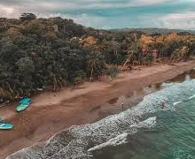

Paquete de Viaje a Costa Rica
Descripción: Costa Rica es un un país de gran biodiversidad con más de 30 parques y reservas naturales, lo que lo convierte en uno de los paraísos ecológicos más bellos del mundo. Además, encontrarás una de las mejores cosas de Costa Rica: su gente, los ticos, como son llamados los habitantes de Costa Rica, siempre orgullosos de su país y dispuestos a acogerte con una sonrisa.
Destino: Costa Rica
Salida desde: Buenos Aires
Fechas de salida: Julio y Agosto del 2024
Tipo de vuelo: Directo
Precio: $700.000